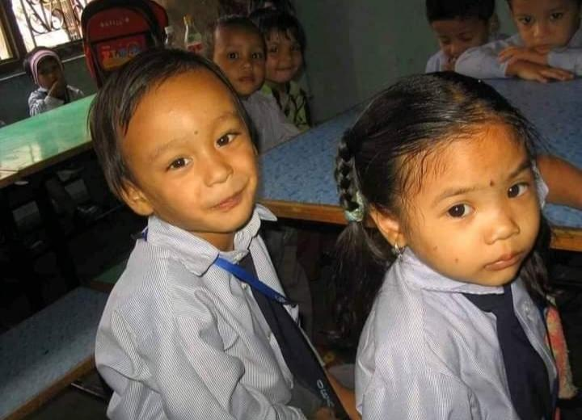
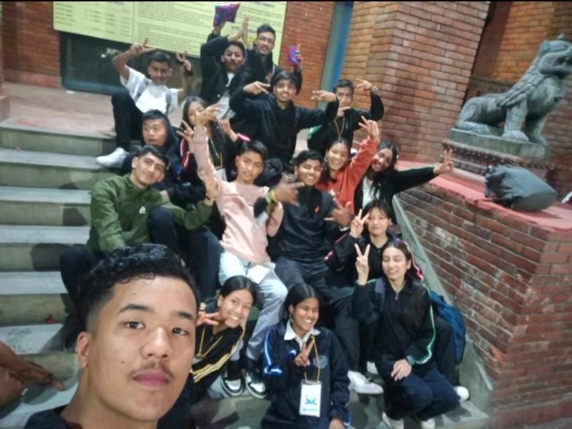
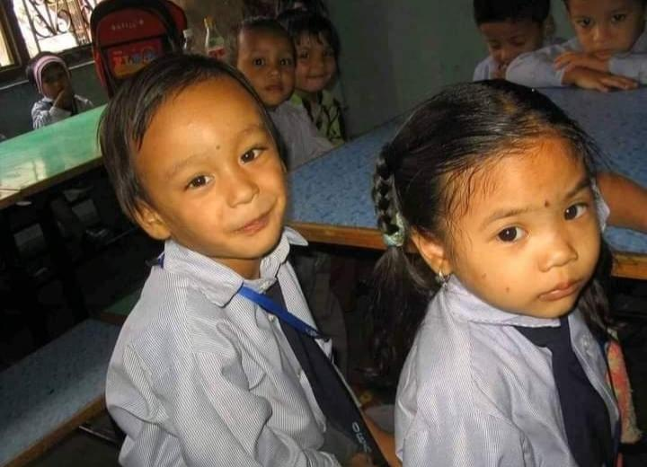
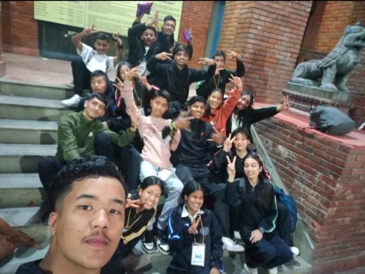

N.T.N: Friendship is a special part of our lives that goes beyond just hanging out or having fun. Friends from the past, in particular, hold a special place in our hearts. They are more than just memories; they represent important moments in our lives, shared experiences, and personal growth.Friends from the past are more than just memories; they are important parts of our personal story and emotional well-being. They help us reflect on our growth, make us feel nostalgic, and teach us valuable lessons about relationships. Even as life changes and we move forward, the friendships we’ve built over the years remain a cherished and meaningful part of our journey.